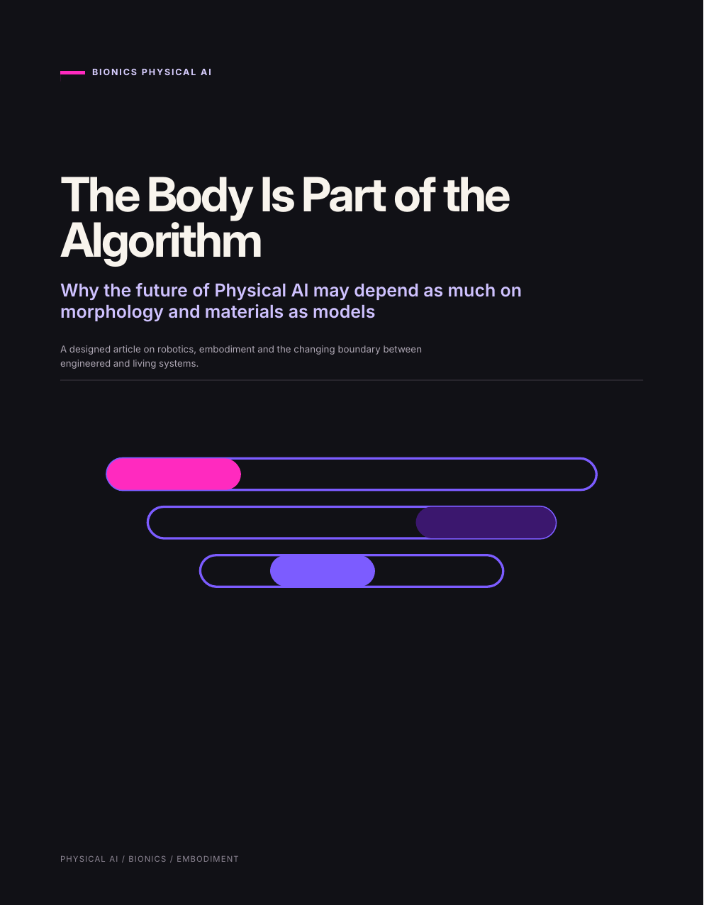

BIONICS PHYSICAL AI · PART 02 OF 05
The Body Is Part of the Algorithm
Why the future of Physical AI may depend as much on morphology and materials as models

Designed article · PDF · 5 pages
Read part 02.
This article looks at the intelligence carried by geometry, compliance, materials and local physical dynamics. A body can simplify control, absorb uncertainty, distribute sensing and sometimes participate directly in computation.
The question
How much intelligence does a physical system need if its body is designed well?
The useful design question becomes one of placement: which problems belong in high-level reasoning, which in learned control, which in local reflexes, and which can be solved by the body itself? The result is an intelligence budget spread across software and matter.